枪械图鉴
本案12款代表枪械的游戏展示图，点击可查看大图。图片来自Sym.gg武器图表；外观展示不用于推断配件或数值配置。
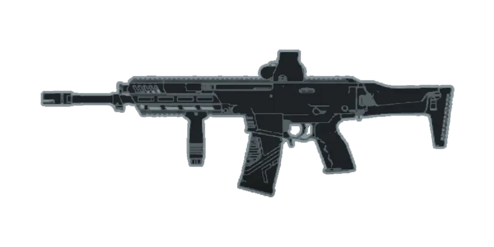
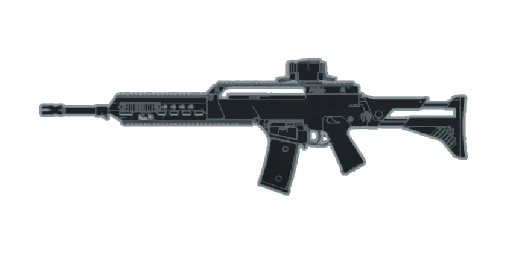
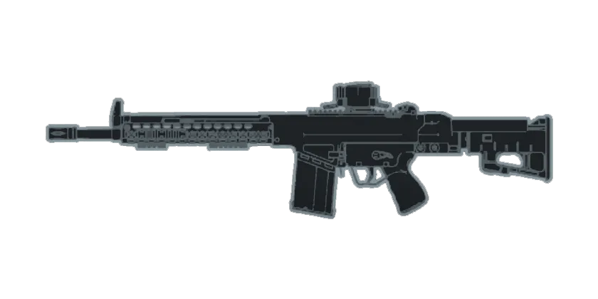
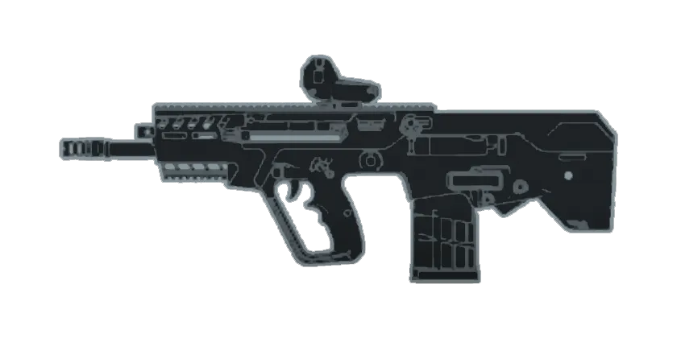
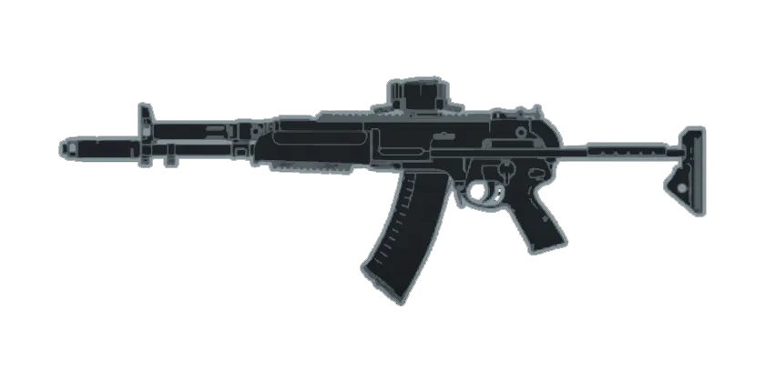
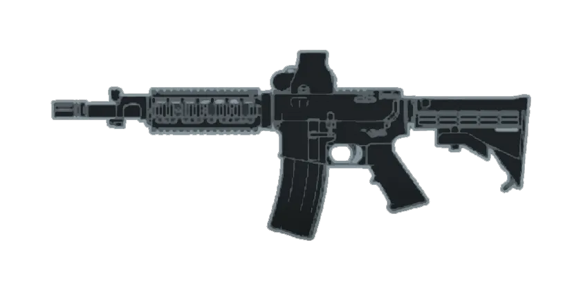
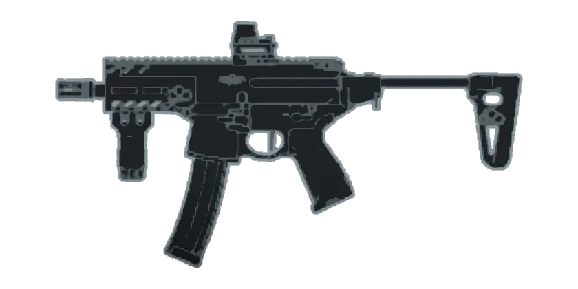
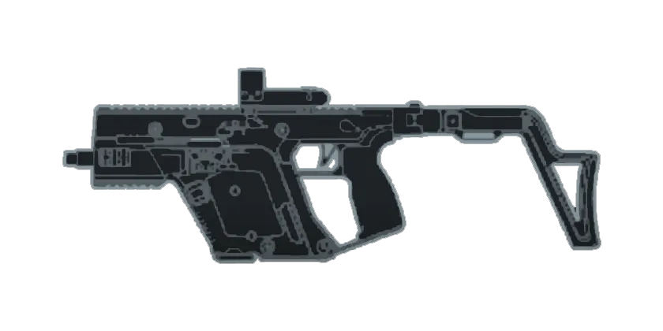
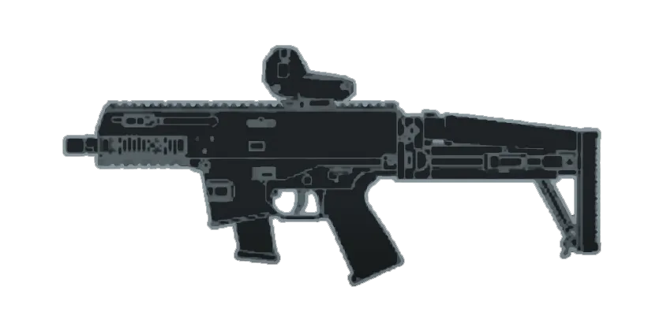
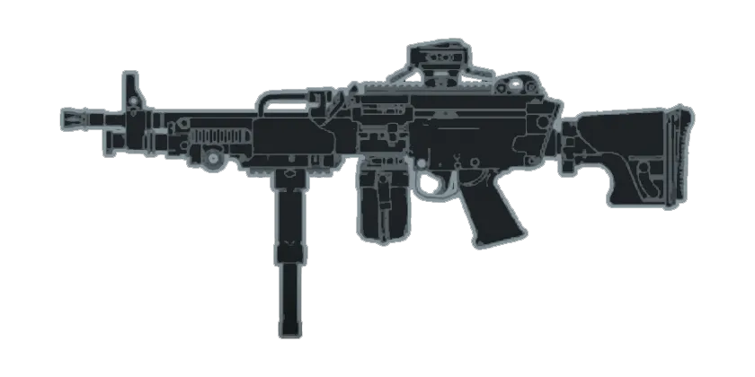
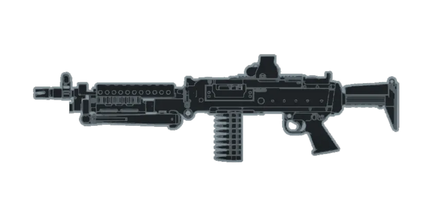
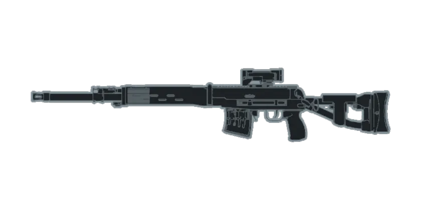
按距离比较枪械
拖动距离，查看12款枪械的基础伤害、击杀弹数与理论TTK。目标为100生命、全发命中，不包含开镜、飞行时间、爆头、护甲或配件修正。
正在加载数据；完整静态数值表见下方分析。
| 枪械 | 伤害 | 击杀弹数 | TTK毫秒 | RPM | 弹量字段 | 初速m/s | 战术／空仓换弹秒 |
|---|
采用来源的阶梯距离口径，精确边界仍需实测。排序只比较理想TTK，不能代表实战强度。换弹已应用速度倍率；弹量字段可能包含膛内弹或特定基础配置。
1 数据依据与结论边界
本地安装路径为 本地Steam游戏目录，Steam App ID 2807960，安装清单Build ID 26325108。exe的通用产品版本为1,0,0,0，不能用它推断游戏平衡补丁。
本地Data/Win32存在weapons.toc以及CAS资源，未发现明文枪械配置表。本次没有完成本地EBX资源解析，没有读取或修改游戏进程。因此以下具体枪械数值来自Sym.gg公开数据库，并非从该本地Build直接提取；尚不能证明与本机平衡版本一致。
公开JSON内部标识为2.1.1.0，日期13 OCT 2026。页面脚本中另有较旧的手填日期，但实际图表读取JSON的info字段；本案以JSON内部标识为公开分析基线。检索日期为2026年11月12日。数据库共67个武器条目，本案选择12把代表枪械。
核心判断：伤害跨过击杀阈值、伤害分段的距离边界，以及实际连续命中能力，往往比单独的射速排名更重要。高射速、高单发伤害、大弹量与低操控负担形成不同角色，不应仅按最短TTK宣布某把枪全面最强。
2 计算口径
目标100生命，使用数据库基础条目，按基础伤害路径结算，不乘爆头或其他部位倍率，不加入护甲、治疗、穿透、配件、兵种和模式修正。全发命中、首发在0时刻，忽略开镜、冲刺转开火、输入、人为压枪、网络与弹丸飞行时间。
击杀弹数BTK＝向上取整(100÷单发伤害)。理论TTK＝(BTK−1)×60000÷RPM，单位毫秒。四发击杀只有三个射击间隔，不能直接拿四个间隔计算。
伤害分段跟随数据库节点与其图表脚本的step口径；本案比较距离均避开跳变节点。精确边界及服务端判定仍需实测。射速计算保留原始精度，展示时才舍入。MagSize是数据库弹量字段，31不直接解释为现实31发弹匣，可能包含膛内弹或特定基础配置。
3 代表枪械对比
| 枪械 | 射速RPM | 弹量字段 | 初速m/s | 5米弹数与TTK | 15米 | 30米 | 100米 |
|---|---|---|---|---|---|---|---|
| M433 | 830.8 | 31 | 630 | 4发 / 216.7ms | 4发 / 216.7ms | 5发 / 288.9ms | 6发 / 361.1ms |
| B36A4 | 720.0 | 31 | 740 | 4发 / 250.0ms | 4发 / 250.0ms | 5发 / 333.3ms | 6发 / 416.7ms |
| AK4D | 514.3 | 21 | 680 | 3发 / 233.3ms | 3发 / 233.3ms | 4发 / 350.0ms | 5发 / 466.7ms |
| TR7 | 720.0 | 21 | 604 | 3发 / 166.7ms | 3发 / 166.7ms | 4发 / 250.0ms | 5发 / 333.3ms |
| KORD 6P67 | 900.0 | 31 | 724 | 5发 / 266.7ms | 5发 / 266.7ms | 6发 / 333.3ms | 7发 / 400.0ms |
| M4A1 | 900.0 | 31 | 590 | 4发 / 200.0ms | 5发 / 266.7ms | 6发 / 333.3ms | 7发 / 400.0ms |
| SGX | 830.8 | 31 | 378 | 4发 / 216.7ms | 5发 / 288.9ms | 6发 / 361.1ms | 8发 / 505.6ms |
| KV9 | 1080.0 | 18 | 362 | 4发 / 166.7ms | 5发 / 222.2ms | 6发 / 277.8ms | 8发 / 388.9ms |
| SCW-10 | 800.0 | 16 | 398 | 3发 / 150.0ms | 4发 / 225.0ms | 5发 / 300.0ms | 7发 / 450.0ms |
| L110 | 720.0 | 100 | 740 | 4发 / 250.0ms | 4发 / 250.0ms | 5发 / 333.3ms | 6发 / 416.7ms |
| M240L | 600.0 | 50 | 590 | 3发 / 200.0ms | 3发 / 200.0ms | 4发 / 300.0ms | 5发 / 400.0ms |
| SVDM | 300.0 | 11 | 760 | 3发 / 400.0ms | 3发 / 400.0ms | 3发 / 400.0ms | 3发 / 400.0ms |
这些是固定命中条件下的时间下限比较，不能当作实战遭遇的完整反应时间。半自动SVDM采用数据库射速上限，需要玩家实际达到相应点击节奏。
4 M4A1与M433体现伤害距离的角色分工
M4A1在5米伤害25，四发击杀，约200毫秒；M433同样四发，但射速约830.8，约216.7毫秒。此时M4A1占优。
到15米，M4A1伤害变为21.5，需要五发，约266.7毫秒；M433仍为25伤害、四发、216.7毫秒，排名反转。30米时M4A1为17.7伤害、六发、333.3毫秒，M433为20伤害、五发、288.9毫秒。
策划含义：近距离优势可以通过伤害分段而非全面降低射速来约束。玩家越过距离节点时，多出的一发是离散惩罚。调整有效距离可能比微调面板伤害更直接地改变地图适应性。
5 TR7与AK4D说明高伤害也有节奏差异
两者近距离基础伤害均为33.4，三发合计100.2。TR7约720RPM，三发TTK166.7毫秒；AK4D约514.3RPM，需要233.3毫秒。高单发伤害并不自动等于更短击杀时间。
33.4降到33.3会使三发总伤害从100.2变为99.9。在不考虑引擎舍入等其他机制的数学模型中，TR7因此从三发166.7毫秒变成四发250毫秒，增加50%。这是阈值敏感性示例，不是已经实施的平衡调整。
TR7的原始ADSRecoilAmount为0.9917，AK4D为0.7022；按图表使用的倍率与指数处理后，展示幅度约1.16度和0.85度。TR7的ADS散布增长字段0.523，高于M433的0.36。它的纸面爆发需要结合实际命中、距离和连射长度评价。
6 KORD的射速为何不能保证最短TTK
KORD 6P67接近900RPM，但近距离仅20伤害，需要五发，约266.7毫秒。M433约830.8RPM，25伤害四发，只需216.7毫秒。更高射速没有抵消多一发的成本。
相对地，KORD的原始后坐力幅度和散布增长字段较小，说明评价应加入命中稳定性。字段差异只能用于提出可控性假设，不能直接换算为玩家命中率。
7 KV9与SCW-10体现爆发与续航的交换
5米时SCW-10为33.4伤害、约800RPM，三发150毫秒；KV9为25伤害、约1080RPM，四发166.7毫秒。SCW-10射速较低，仍因击杀弹数少而更快。
KV9弹量字段18，满射速射击间隔约55.6毫秒，首发至第18发约0.944秒。SCW-10弹量16，间隔75毫秒，首发至第16发约1.125秒。它们都容易迅速进入换弹空窗，错失多发后的代价不能忽略。
在5米全发命中且每个目标100生命的理想条件下，KV9每匣最多完成4次四发击杀，SCW-10最多完成5次三发击杀。此为理论资源上限，排除了失误、转火、掩体与残血，不代表实战连杀保证。
8 弹速改变中远距命中条件
基础初速：M433为630米每秒，B36A4为740，M4A1为590，KV9为362，SVDM为760。用距离除以初速得到的100米飞行时间代理分别约159、135、169、276、132毫秒。
真实弹道存在阻力、重力和运动状态变化，上述值不是完整弹道模拟。它仍说明低初速在远距会放大提前量要求；不能只比较伤害TTK，而忽略最后一发何时命中。公平对比应在同距离下加入相同口径的飞行模型。
9 换弹需要应用速度倍率
原始ReloadLeft、ReloadEmpty不是所有条目最终展示的换弹时长。Sym图表采用原始时长除以ReloadSpeed；TR7倍率约0.979166，M240L约0.949176，直接抄原值会低估时间。
| 枪械 | 战术换弹秒 | 空仓换弹秒 | 差值秒 |
|---|---|---|---|
| M433 | 2.38 | 2.97 | 0.58 |
| TR7 | 2.40 | 3.37 | 0.97 |
| M4A1 | 2.20 | 2.70 | 0.50 |
| KV9 | 2.38 | 2.90 | 0.52 |
| SCW-10 | 2.60 | 3.11 | 0.51 |
| L110 | 6.50 | 7.73 | 1.23 |
| M240L | 4.25 | 5.90 | 1.65 |
这些为数据库图表口径，不等于实测可取消换弹或最早再次开火时刻，后者需要动画与状态测试。多数样本空仓换弹更慢，但不能把此关系推广为每把枪必然成立。
L110弹量100，近距25伤害，理论上支持更多连续目标；代价是长换弹。M240L有33.4伤害和50弹量，形成不同火力节奏。轻机枪的价值还应通过连续接敌、火力覆盖和停火窗口评估，不能只看单目标TTK。
10 后坐力与散布必须分开
后坐力改变瞄准方向，散布影响弹丸围绕射线的分布。压枪能补偿部分方向变化，但不等于消除散布。初始散布、每发增长和恢复规则需要联合分析。
M433与B36A4的初始ADS站立散布均为0.05度，移动为0.32度。它们初始散布相同，不意味着连续射击或操控相同：展示后坐力幅度约0.79与0.73度，方向变化字段分别41.4与28度，初速也不同。
数据库的方向变化值是角度参数，不是水平方向弹着点宽度或命中率；完整后坐力还包含倍率、指数、恢复和射击节奏。不要把原始ADSRecoilAmount直接当作最终屏幕抬升。
11 爆头霰弹与栓狙的特殊处理
步枪图表包含1.34倍伤害的示意。以25伤害、1.34倍率的构造演算，三次爆头合计100.5，可以三发击杀；一次爆头加两次基础命中仅83.5，仍不足三发。该演算不证明所有武器、部位和模式均使用相同倍率。
霰弹枪条目含每颗弹丸伤害及pellets。M87A1的近距字段为8.4、16颗，全部命中合计134.4；M1014为7.2乘16，合计115.2。能否达到这些值取决于散布、命中颗数、距离和结算规则。M87A1原始RoF甚至为1799.999，来源页面也隐藏霰弹射速，因此不能将该字段当作实际泵动循环或用于武器排名。
来源明确注明栓狙当前展示sweet spot伤害，仅适用于上胸等指定命中区域。不能将100伤害段解释成全身一枪击杀。Mini Scout射速还注明采用游戏面板覆盖值；这些条目不纳入本案统一基础伤害TTK排名。
12 策划结论与后续验证
第一，按距离观察BTK阶梯与TTK，而非只看近距DPS。第二，检查伤害微调是否跨过100生命阈值。第三，分开测单目标爆发、多目标弹量和换弹空窗。第四，把命中稳定性与理想TTK联合解释；射速、伤害、弹速、后坐力和散布应共同形成枪械定位。
需要进一步核验的项目包括：本地Build与公开补丁映射；无配件和指定兵种下各距离的实际伤害；射击间隔；弹匣与膛内弹；战术与空仓换弹后的最早开火；不同部位倍率；移动与连射下弹着分布。测试应记录模式、生命与护甲、兵种、配件和距离，避免将Portal规则、Redsec或单人配置混入同一组样本。
来源
本地Steam安装清单：Steam安装清单 appmanifest_2807960.acf。
公开武器图表：https://sym.gg/legacy/index.html?game=bf6&page=charts
公开数据：https://sym.gg/legacy/pages/bf6/data/bf6.json
图表算法：https://sym.gg/legacy/pages/bf6/bf6_chart.js
距离处理：https://sym.gg/legacy/pages/bf6/bf6.js
本案自行复算BTK与TTK，未直接照抄网站TTK输出；数据快照和计算脚本保存在工作区，以便复核。第三方数据库数值并不构成本地版本已验证实值。
分析与数据下载
完整分析涵盖12款代表枪械、伤害阈值、距离反转、弹速、换弹及特殊枪种边界。CSV包含5、15、30、50、100米的伤害、弹数与TTK。
游戏名称、商标及原始内容归各自权利人所有。本项目为独立研究，与原作开发商、发行商及数据站无隶属关系。
浏览全部作品 →